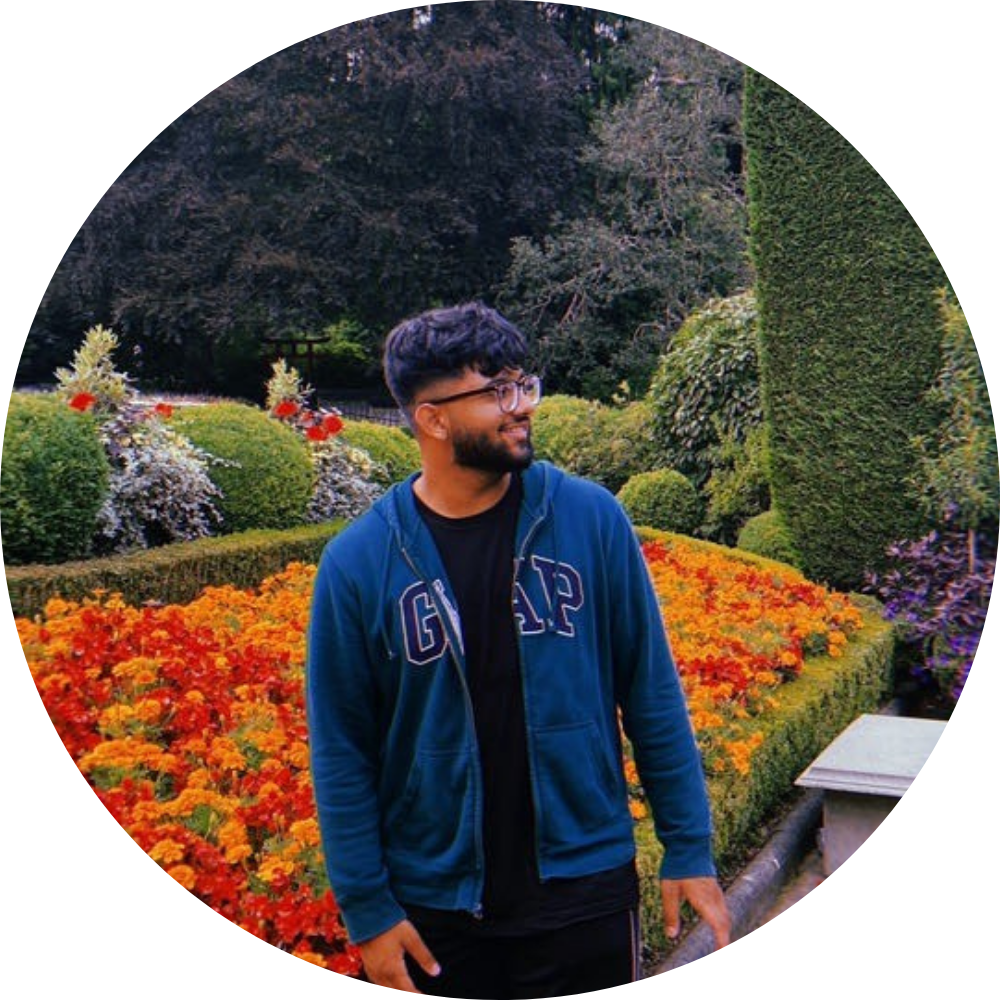
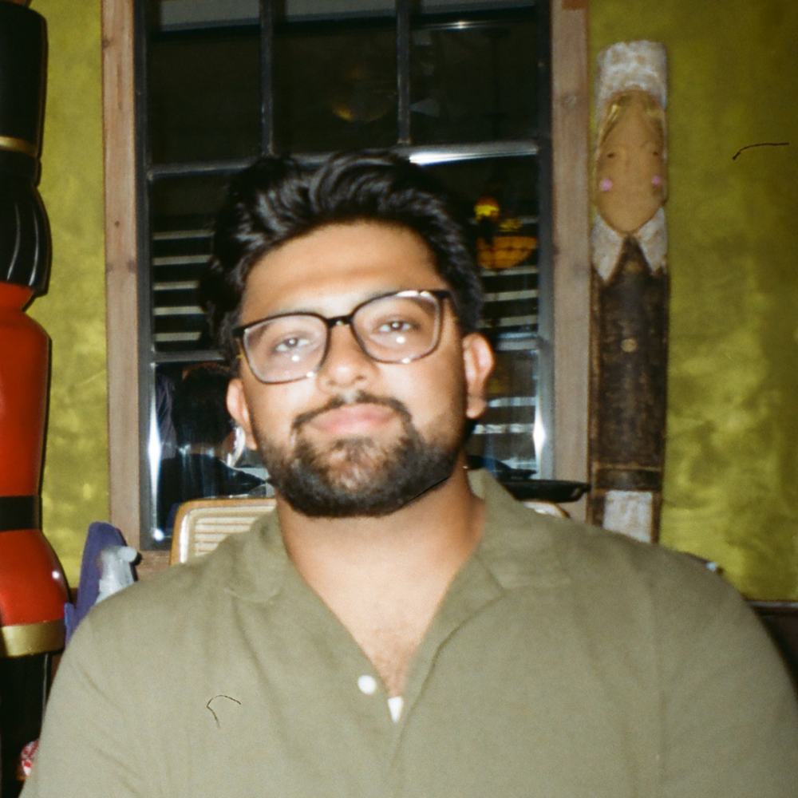
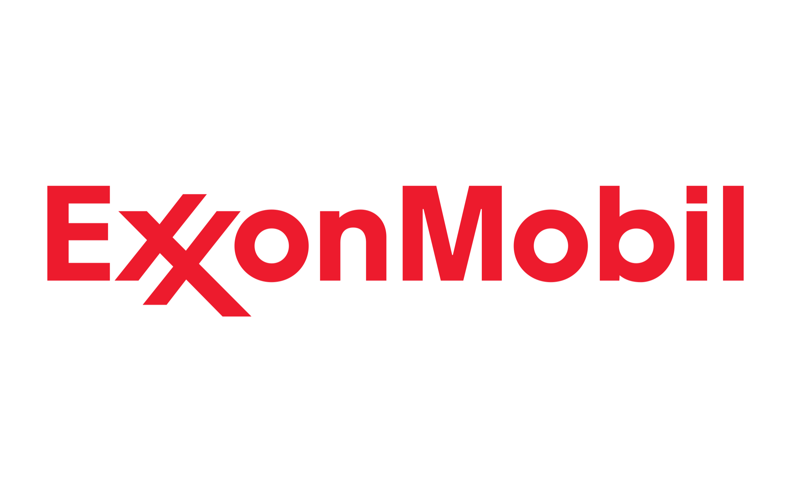
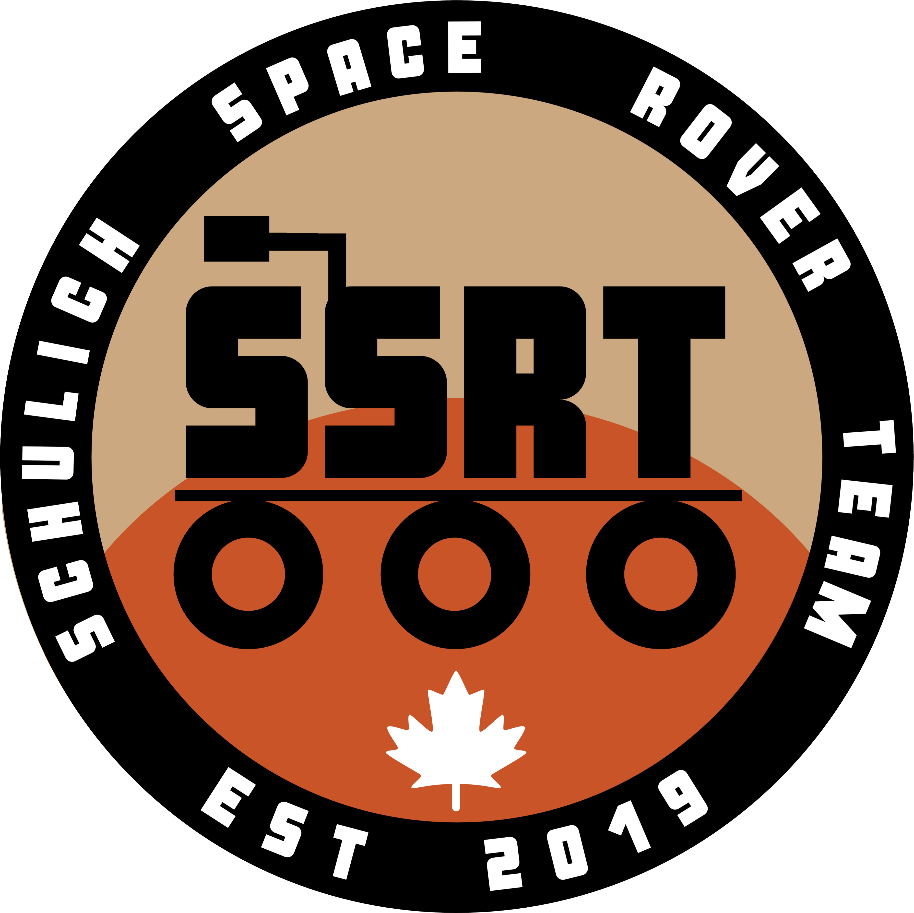
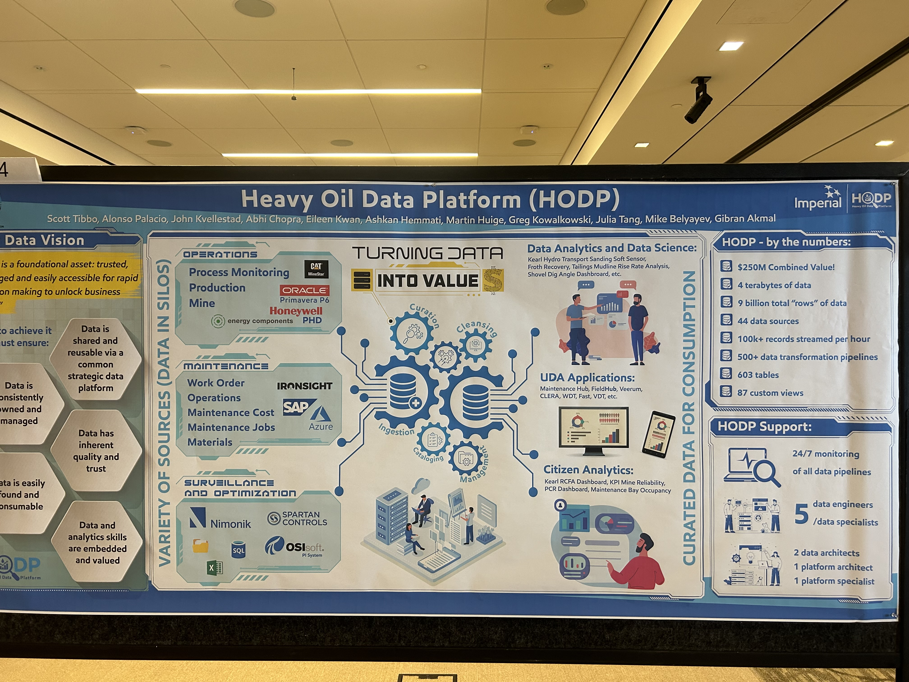
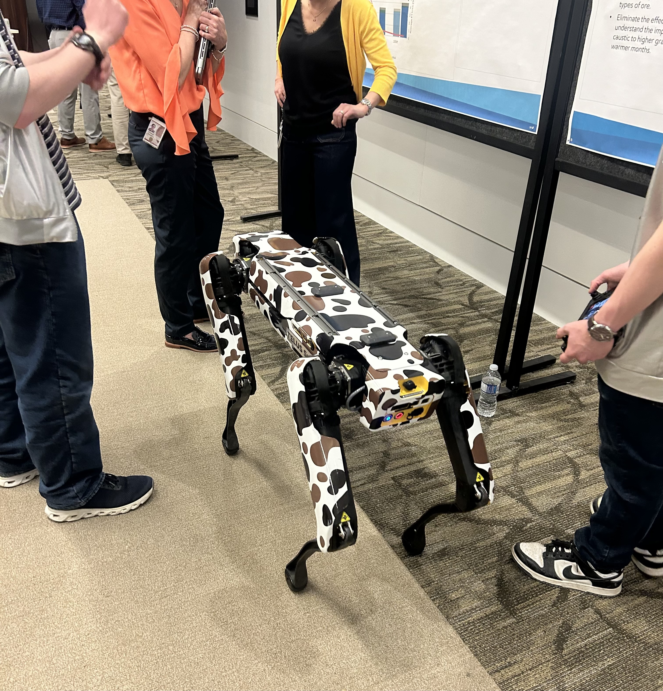
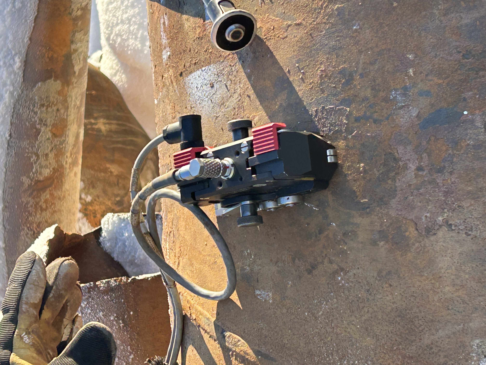

Hi 👋, my name is
Gibran Akmal
and I'm a(n)



Hi 👋, my name is
and I'm a(n)
Get To Know More


- Duke of Edinburgh Awards (Bronze & Silver)
- UoW Pascal Mathematics Competition distinction
- 4 year volunteer with the Step Forward Volunteer Association

B.Sc. in Software Engineering
Graduated: June 2025
With experiences in three countries, I've gained a deep appreciation for diverse cultures. While excelling in software engineering, I explore various engineering fields, aiming for versatility. I'm passionate about helping others, engaging in volunteer work and leveraging software skills for positive change. Thriving on collaboration, I enjoy building connections and indulge in outdoor activities & sports when I'm not working on my car. Committed to growth, I invite you to explore my impactful contributions.
Explore My
Click/Tap on each experience to learn more
Data/Business Analyst
Translate client business needs into technical specifications and lead a development team delivering system enhancements via Azure DevOps

Data Engineer
Engineered data pipelines and CI/CD workflows for autonomous haul truck telemetry and pipeline integrity analytics
Pipeline Integrity Engineering Intern
Used software and pipeline integrity expertise to assist in the collection, validation, and analysis of field pipeline data
Programming Instructor
Taught a wide age range of students multiple programming and engineering concepts

Interface Engineer
Utilized ROS and React to build a base station interface for piloting the rover
Browse My Recent
Get in Touch

As a Data Engineer on the Heavy Oil Data Platform (HODP) team, I designed and maintained data pipelines and CI/CD infrastructure supporting autonomous operations and pipeline integrity analytics across three assets: Kearl, Cold Lake, and Norman Wells.
Caterpillar's Autonomous Haulage System (AHS) trucks operate in large fleets at the Kearl oil sands asset. A core part of my role was handling the real-time telemetry data streaming needs for these vehicles — ingesting Minestar sensor data via Azure IoT Hub and MQTT into Delta Lake tables, enabling a 0.5 km/h increase in average truck speed and $11M in operational savings.

At the Cold Lake asset, autonomous systems including the Boston Dynamics Spot robot dog and unmanned aerial drones are deployed for site inspection and monitoring. HODP supports the data infrastructure that enables these assets to operate — processing sensor feeds and surfacing inspection data across the platform.

Kearl site technicians demonstrating how Ultrasonic Testing (UT) scanners take wall thickness readings on pipe spools. I built an Azure Data Factory pipeline to automate ingestion and validation of these UT scan files for Large Diameter Piping, increasing data availability by 32% and reducing manual processing by 20+ hours/week. I also collaborated with data science teams to build a predictive analytics tool forecasting wear on critical spools and suggesting degrees of rotation to maximize spool life, enabling $13M in cost avoidance via proactive inspection planning.